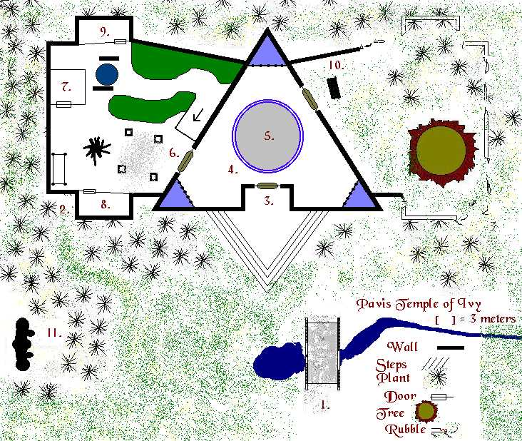
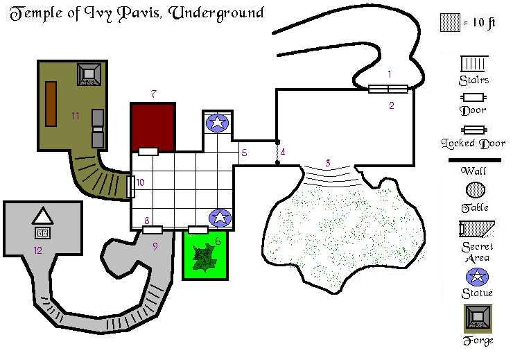

By the Ouija, 10.17.1999
Outline: This adventure finds the party at the doorstep of a long forgotten and hidden temple to Pavis, the founder of the City of Pavis in Prax. The location of this temple is within Sartar in the Stinking Forest, a place of solace that Pavis sought during his travels from Shadows Dance to Dragons Pass while in the company of the great Faceless Statue and The Dwarf (Some say Hardeye Flintnail). This of course was many many hundreds of years ago. With the help of Hardeye, Pavis built a grand place of rest for himself and friends, a place all could retire to and avoid the world and prying eyes for a time. This palace was later converted to a temple honoring the distant god and was his home for a time after he left the city Pavis upon its creation.
Over the centuries the temple has fallen to disrepair and was the home of a marauding group of dragonewts and chaos worshipping elves for a number of decades. Over the last hundred years there has been little noise out of the ruins and they have since been overgrown with elf ivy and thick tanglers. The location of the temple is off all normal paths but can still be seen from most places in the New Moon Foothills and from Thunderhead, the top of the temple an ancient beacon. Locals know that raiders claimed the temple decades ago and these raiders held sway in the area quite for a long time but since the move of the main road away from their activities, the area has fallen silent and has been reclaimed by nature.
Setting: For three hundred meters in all directions from the temple lie savage plants and gardens. The area has strongly been claimed by a marshy expanse fed by a foul river. This smallish river originates at a local small hill but as the water makes its way down the mountain face it passes through a gorp nest, an extremely ancient one where many generations of burped to life and moved on. This foul tainted water has caused the local vegetation to mutate and become corrupt over the last hundred years. If this taint were removed from the Spring River the area might recover. The temple itself is a massive dark stone building towering like an Aztec pyramid over the surrounding forest, its top a mantle of thick black ivy and cloth tearing thorns and its base a mire of stench gorps and deadly man eating plants.
Adventure Premise: The adventurers found out from a Pavis initiate that was at one time a Lankor Mhy priest, that when Pavis left the newly constructed city named after him, he left to the west and was never seen from again. The reason he left was that he has been given an item, an object of ancient magic to hide, one that should not have been hidden with the other treasures that New Pavis the city would soon hold. If this object were stored where curious hands could obtain it, life across Prax and Sartar could quickly come to an end or at the very least war would ensue the likes of which had not been seen since the battle of the Devil and Stormbull.
The time has come, the Lunar occupation of Pavis has become brutal, nearly all Lightbringer cults have seen their most prominent leaders poisoned or found mysteriously dead. Open worship of chaos cults and the power of the Red Goddess is becoming all too apparent and there are rumors of rebellion. Any rebellion will fail unless a hero was to appear and rally the rabble into an ordered force. The Lunars that occupy the area are outnumbered at least ten to one but their strict military order maintains firm grasp over the unorganized hoards of plains barbarians. That hero is soon to be born, the first Rune Lord of Pavis will soon appear from the rubble temple, Durnithicus the Bright.
This powerful warrior is a current and secret Rune Lord of the banned cult of Orlanth and is about to become the first Rune Lord of Pavis in over four hundred years by secret arrangement of the local Pavis cult and a distant sect of hidden Orlanth followers. In order to coronate this new Rune Lord, a ceremony must be held where the symbol of power is handed from the last Rune Lord to the new one. This symbol of power was a deep blue stone great sword that held a position over the chair of the ruling Rune Lord in the city of Pavis.
The ornamental sword was ceremoniously swung in the air while speaking an ancient poem and if the new leader was favored, light would shine through the top of the Pavis temple and illuminate the Rune Lord. This light indicated that a blessing of rich harvests and health would be guaranteed over the next harvest. This ceremony was performed just before each harvest season by the current Rune Lord and was always seen as a formality until now. This ceremony could mark the beginning of a new strength and unity for the plains barbarians of Prax, a washing and forgiveness for old transgressions and tribal hatreds. It is this object that Pavis himself spirited away centuries ago before the fall of Old Pavis, before troll hands or raiders could steal it away and destroy hope for the horse riders of Prax, now know as the zebra riders and descendants of the princesses of Pavis. It just may be hidden deep in the ancient palace and temple to Pavis within the Stinking Forest, in the Ivy Ruins.
Map of the Plinth Grounds

Redscab the Fat, Broo Initiate of Thed
STR: 16, CON: 17, SIZ: 33, INT: 12, POW: 15, DEX: 9, CHA: 3
Mov: 9, Pips: 16 (8 in head)
WEAPONS: 2H Bronze Military Flail 60/65 2d6+2+2d6, Spear 70/35 1d8+1+2d6, Head
Butt 75/40 with Iron Horns 1d8+3+2d6
ARMOR: Poor Chain mail, 5 points in all locations, chain hood is cut to allow
horns to show through
SPIRIT MAGIC: Bludgeon 3, Disruption, Fanaticism 2, Heal 3, Protection 4
RUNE MAGIC: One shot Crack 1
SPECIAL SKILLS: Tracking 65%
CHAOS FEATURES: (1) Size increase of +4d6
DISEASES: None, scary huh
DESCRIPTION: Redscab is a very large broo, well..., very fat. He is six foot
but just about that big around too, he is the ring leader of the group of
squatters that live within the plinth. They run together like a pack of dogs
stealing and killing what they can and making off with the spoils to the plinth
here. They have lived here a few months now and are settling in fine. Redscab
has built a chaos mound for himself and plans of turning the plinth into a
temple to Thed at some time in the future.
SPECIAL EQUIPMENT: A broad necklace provides Redscab protection from any spirit
attacks, this immunity has proven life saving many times. He also carries 12
wheels and 143 Lunars.
Poc (da Muscle), Broo lay member of Thed
STR: 44, CON: 12, SIZ: 18, INT: 11, POW: 11, DEX: 17, CHA: 5
Mov: 9, Pips: 14 (5 in head), Defense: 35%
WEAPONS: Maul 45/45 2d8+3d6, Head Butt 55/--- 1d6+3d6, Spear 50/40 1d8+2+3d6
ARMOR: Chain mail 5 points and leather underneath for 1 more (Total of 6)
SPIRIT MAGIC: Bludgeon 2, Disruption, Heal 2, Ironhand 4, Speedart
SPECIAL SKILLS: Cooking 60%, Gaming 40%, Wrestling 55%
CHAOS FEATURES: (1) Strength increase of +2d6, (2) Strength increase of +3d6
DISEASES: None, maybe sometime soon...
DESCRIPTION: Poc is the strong man of the raiding group. He is tall, about
seven foot tall, his fur is dark and matted, and his eyes are shifty and hold a
glint of insanity, hence the reason he is the cook for the group. Poc performs
any strong feat the group needs and is said to be able to tear a tree from the
ground if necessary, or just showing off for some lady.
SPECIAL EQUIPMENT: He carries 22 Lunars and 80 clacks.
Winchester, Centaur lay member of Thed
STR: 21, CON: 16, SIZ: 30, INT: 17, POW: 16, DEX: 19, CHA: 11
Mov: 12, Pips: 21(7 in head)
WEAPONS: Lance 60/60 1d10+1+2d6, Bow 50/--- 1d8+1+2d3, Hoof 65/--- 1d8+2d6,
Bastard Sword 50/55 1d10+1+2d6
ARMOR: Composite and heavy leather (4 points all around)
SPIRIT MAGIC: Darkwall, Firearrow, Heal 4, Protection 4, Repair 2, Xenohealing
3
MAGIC: Winchester has a spirit in his lance named "Calibur" it has a
POW of 16, and INT of 8
SPECIAL SKILLS: Camouflage 45%, Spot Hidden 60%, Tracking 65%, Set/Disarm Trap:
50%
CHAOS FEATURES: Has a gem in abdomen worth 1000L, this agate weighs one hundred
pounds though
DESCRIPTION: Winchester is a broo centaur, kind of rare but he thinks of
himself as the only one, rare and to be treated as royalty. He has a giant ego
and spends most of his time preening himself and looking dainty. He is
steadfast loyal to Redscab and will give his life to save anyone of his
comrades...unless of course enough money comes his way...
SPECIAL EQUIPMENT: He carries 255 Lunars in a saddle pouch along with three Heal
6 potions and a scroll that will increase Garrote skill by 1d20%.
Big Ted, Dark Troll lay member of Thed
STR: 21, CON: 17, SIZ: 40, INT: 5, POW: 8, DEX: 17, CHA: 10
Mov: 8, Pips: 24 (9 in head)
WEAPONS: (Criticalled) Bastard Sword 45/45 1d10+3+3d6, Heavy Cestus 60/60
1d3+2+3d6
ARMOR: Heavy Scale and skin for 5 points
SPIRIT MAGIC: Ironhand 4
MAGIC: Big Teds bastards sword sports a spirit named "Chopper" that
has a POW of 10 and an INT of 3, there is also a Heal 2 matrix on it.
SPECIAL SKILLS: Jumping 75%
CHAOS FEATURES: (1) Size increase of +4d6
DESCRIPTION: Big Ted is big, tall, he is ten foot tall and usually carries
Little Ted on his shoulders. The two brothers work for Redscab out of necessity
and will not be overly loyal if the tide of battle became poor. Big Ted is not
smart but his wisdom seems to keep him alive, there is some sort of spark
behind his dull eyes and he seems to really be thinking, or is that just white
noise?
SPECIAL EQUIPMENT: He carries 3 wheels and a necklace made of papier-mch
worth 15L.
Little Ted, Dark Troll lay member of Thed
STR: 20, CON: 17, SIZ: 4, INT: 19, POW: 18, DEX: 15, CHA: 13
Mov: 8, Pips: 15 (5 in head), Defense: 40%
WEAPONS: Dart 60/--- 1d6, Short Sword 50/50 1d6+1, Small Shield 15/60 1d6
ARMOR: Leather and Skin for 4 points
SPIRIT MAGIC: Darkwall, Demoralize, Glue 3, Heal 6, Farsee, Mobility, and
Protection 4
SPECIAL SKILLS: Set/Disarm Trap: 70%, Spot Hidden: 50%, Tie Knot: 80%
DESCRIPTION: Little Ted is the small brother to Big Ted. Sometimes accused of
being a Trolkin, Little Ted is anything but a Trolkin. He is brave and will
often fight in battle beside his brother, using his magics to aid them both. He
is usually thrusting himself into the heat of battle oblivious to the fact of
odds. He big brother often has to play the wisdom for him, he may be smart but
he is incredibly naive.
SPECIAL EQUIPMENT: He carries a matrix on his shield of Multi-Missile 3, and in
a waist pouch he has 6 wheels and 20 Lunars, and a small ruby worth 500L.
The lower temple of the floor is kept clean and straight while the stairs to the upper floor and doored/barred/and locked. Tan will allow characters up here but only as long as they do not hold him responsible for what may happen. Tan will help find whatever books are necessary as long as they are on the first floor (which no useful books are). You can decide what books are here on the first floor: such as Cooking Troll Style, Great Chefs of Sartar, The Fungi and You, Sawdust and Swords, How to Build a Better Rubblerunner Trap, ...
1. Ancient Bridge
COMMON: The swampy area here is broken by the fairly intact remains of a very
large and low bridge. The stone bridge appears to have been built over a small
creek and spring that must have provided access to the plinth and grounds long
ago.
CLOSER: This bridge appears to be made out of a gray marble and rises from the
ground to a total height of five feet above the creek before it lands on the
plinth side. Each side of the bridge is marked by a two-foot short wall with a
rounded top that is covered along its length with runes of Dragonewt and Pavis
cult affiliations. The creek is dark green and acts as a runoff for the fetid
swamp water that trickles it's length and winds up is a smallish pool of dark
brown water covered in muck. The edges of the creek are tall with cattails and
swamp grass.
GM: Those that make a successful Masonry skill roll will notice that the bridge
appears to be seamless and have been saved out of a single piece of giant leg-bone
stone, possibly taken from remains of the ancient and unusual quarry in the
rubble. (See Pavis Book and the Rubble for details on this bit of history).
Those who cast the spells of either Strength or Coordination while on the
bridge will be able to exceed the normal spell limitations set by racial or
stat scores thus allowing great temporary boosts. This bridge was originally
used in this fashion to refresh the mounts of those that traveled far to meet
Pavis in his summer get away home.
2. Aluminum Tree
COMMON: Growing next to the ancient while plinth appears to be a tree made of
the rune metal aluminum, including bark, leaves, branches, everything gleaming
and bright: certainly odd amongst the rest of the swamp plants or trees.
CLOSER: This is a thirty-foot tall oak tree; it appears to be made of living
aluminum, probably some gift from a water cult to Pavis himself. The tree
doesn't seem to shed leaves but the tree seems very alive in the breeze. The
tree is cool to the touch and looks incredibly old.
GM: If a successful Spot Hidden roll is made on the tree, a small heart etched
in the surface with the initials P.V. Luvs C.A. could be found, however if
thought of as too cheesy, you could substitute a nice set of recently carved
Vivamort runes. If an attempt is made to ruin the tree or remove it from the
area, a water spirit will arise from the bridge area (#1) and attack the
offender. If defeated then two will attack, if those are defeated as well you
might want to employ the statue at #11 as a final guardian. This tree was a
gift from Chalana Arroy to Pavis...a long time ago.
3. Eye of Brass
COMMON: The huge ivy covered white plinth stretches into the sky some fifty
meters. The front of the plinth was carved out to make way for a circular brass
door shaped like a great iris while a set of three stairs and a large landing
make a welcome greeting area, probably used to usher visitors into the plinth
itself. A statuary may have filled the area long ago but only leaves and ivy
cover the area now.
CLOSER: The door is made of tarnished brass and is large enough to allow an
elephant through. Off to one side of the door is a silver dish built in the
wall, it has a depression in it's surface that appears to be hand sized (human)
and etched with miniature runes and what might be a matrix for some very
complex spell. The door appears to be well greased near its edges and must
still be used for it is clean and clear at its base. On the landing there are
depressions where ten statues were at one time resting. The grandeur of the
plinth must have been impressive.
GM: To gain access to the plinth interior, any hand must be placed on the dish,
which will cause the door to open. As for the matrix in the palm of the
depression, it takes two points of power from any hand placed on it and uses
this power to open the door. If ten points are placed in the matrix, it will
lock the door. This would be bad, as the key was known to be on a necklace that
Pavis never parted with.
4. Plinth Prayer Area
COMMON: The interior of the plinth is grand and ancient. The floor of the
plinth is polished white marble with faint flecks and veins of what might be
silver, while the center of the room is dominated by a circular depression of
one meter that can be reached by two large steps. Each corner of the plinth has
a waist high railing that blocks off the last few feet of the corner and in
that smallish area the stone floor is dark blue and the walls just behind it
seem to glow dimly white providing the only light for the room. There appear to
be two more Iris doors in the room leading off to other parts of the plinth
grounds.
CLOSER: There are no seams or cracks in the floor at all and the ceiling
overhead comes to a point some ten meters above. The railings in the corners
are made of hand carved oak and are one meter tall. They bore some sort of
plaque at some distant time but those have long been torn free, evidence that
the plinth has been the subject of looters. Maybe this is a dead plinth? Each
corner does glow dimly, the walls seem to bear some sort of illumination from
behind so maybe this is not the case. In each corner is a smallish pedestal
covered with dust, a statue or other sacred object may have occupied that space
long ago. The western railing area is the home of three corpses, one is a plain
and bare skeleton, one is that of a human wearing dark and moldy clothing, and
the last appears to be that of a slim elvish female. They are all horribly old
and desiccated.
GM: Those with Rock Lore or the Stone Shaping skills of a Mostali will have a
chance to detect the faint trace of a slope that leads from the rooms edges to
the Sacred Sanctum depression in the center of the room. Each railing is more
than just a wooden barrier. When both hands (or two hands in the case of those
that are extra handy) and placed on a railing a vision will appear to the
person doing so as well as those that might be watching. North Railing = The
rune of LAW will appear in a 3D fashion in front of the person and it will
appear to be slowly rotating. If the character doing so is of a cult that has
the rune of LAW within it, then he will receive a gift from the forces of LAW
as determined below. Those that touch the eastern railing will see a vision as
well. East Railing = The rune of Illusion will appear in a 3D fashion in front
of the person and it will appear to be slowly rotating on it's side. The three
spheres of the rune will begin to swirl and circle the head of the person. If
at anytime the person releases their grasp the motion will stop and the rune
will fade. Each sphere in turn will strike the person, the first in the left
hand, the second in the chest over the heart, and the last in the forehead.
Each of of these strikes will effect the person as follows, the first will take
away one point of Power, the second will take away one point of Intelligence,
then the third will restore the lost points as the person has passed the test
of illusion, the third sphere will grant the person an instant power gain roll
and one effect from the gifts of Illusion below. Those that touch the western
railing will see a vision as well. West Railing = The rune of Death will appear
in a 3D fashion in front of the person and it will appear to be slowly rotating
and made of jasper. If the person is of a cult that bears the death rune then
they will receive a gift from the Death rune listing below, if they are undead
then they will be instantly slain. The three bodies at the railing have little,
the female elf does have a very nice bow made of the bone of a wyvern. It requires
a strength of 19 to draw and has 30 pips. It can launch an arrow twice as far
as a composite bow and with greater accuracy. It has a base of 20% and can do
1d10 points of damage. It is marked with a matrix, Quickshot (3) detailed
below.
|
QUICKSHOT |
|
|
Range-Touch |
POW Used-1 point/point of spell |
|
Type-Passive, unfocused on self, focused on others, temporal |
Cult Ties-None |
This spell enables the person effected by it to trim one strike rank from their readying of a missile weapon in battle. This stackable spell can reach a total of five points and no more. The spell cannot drop the total Strike Rank required for a reload to less than one. The spell has no effect on weapons that contain a spirit. While the spell is in effect, spells that normally effect the missile will have no effect, such as Multi-Missile or Firearrow.
|
D100 |
Result of LAW Gift |
|
01-03 |
+1d6 is granted to a randomly determined stat (This can exceed racial limits if so rolled) |
|
04-14 |
A spell of the characters is increased by one point, the Storyteller will determine which spell by random chance, this can cause a spell in increase beyond normal spell limitations. This can happen and will cause the spell to be increased in a logical manor. |
|
15-25 |
The character is healed of all injuries and is granted a bonus of 20% to their First Aid skill and if they have the Heal spell, it is increased by one point even if it is at the maximum level already |
|
26-40 |
A Random skill is increased by 4d6% |
|
41-59 |
+1d3 is granted to a randomly determined stat (This can exceed racial limits if so rolled) |
|
60-66 |
The main weapon of the character becomes highly tempered iron, it's pips double and it gains +3 damage bonus |
|
67-75 |
A random location of armor becomes blessed by Law. It appears to turn to a stainless steel like iron, its armor point protection ability doubles. If the person does not have metal armor, then the leather is turned into a flexible metal that appears as leather from a distance, up close it is a fine weave of metal, the protection value will be 4+1d4 to be determined by the Storyteller |
|
76-85 |
The character gains the rune spell Face Chaos, usable once a day |
|
86-95 |
The character gains a random Rune spell, the spell if multi-point then, will be wirth 1d4 points as determined by the Storyteller. Rune spells appropriate to the characters cult need not be the only ones granted...this could be entertaining. The Rune spell will be re-usable even if the character is not yet a rune level |
|
96-98 |
Gain 1d6 points of Divine Intervention to the characters god |
|
99 |
The character gains the Touch of Justice. If the person touches a creature that is effected by a chaos feature, then a POW vs POW struggle will ensue much like that of a Spirit Combat except that the character is battling the Chaos within the target as if it were an entity. If the character wins, the Chaos feature is destroyed and the target is no longer effected by it. If the character fails, then the feature is replicated within him! Don't forget to roll for the chance to turn into a Gorp! |
|
100 |
The characters tribal weapon or main weapon gains a four point matrix of the appropriate type, Bladesharp for blades, Bludgeon for those that are smashing weapons, and Ironhand if it happens to be a natural weapon. Matrix tattoos will appear on the body in a USEFUL location, no such things as Ironhand 4 across someone’s own butt. |
|
D100 |
Result of ILLUSION Gift |
|
01-02 |
Gain a 1d3 bonus to one stat and 1d3 to the characters POW score |
|
03-09 |
Character is granted immunity to all spells of Illusion weather Rune or Sorcery, he will see them for what they are and can choose to participate in them or not, however either decision will render the illusion unable to damage the character |
|
10-25 |
Character gains one random spell as determined by the Storyteller, the point value of this spell will be determined by rolling 1d6 |
|
26-50 |
The character is given ten chances to increase any skill he so desires, he must roll each improve roll and succeed in order to gain any increase |
|
51-70 |
1d6 gems fall at the characters feet, if he takes only one that will be the real one if he attempts to take more than that, they will all turn into illusions. The gemstone is rolled by consulting the gem/jewelry chart in the RQ rule book, but only roll 1d20 not 1d100 to determine the value of the stone. |
|
71-85 |
Gain 1d10% to any one character selected skill, and gain 1d10% to the characters Camouflage skill |
|
86-95 |
Potion of Illusion appears. When poured on one item such as a suit of armor or weapon, then that item will increase in pips by 25% and gain +1d4 (determined at the time of pouring) to protection if armor or damage if a weapon. The weapon outwardly will appear unchanged and non-magical even though it has been reinforced by the powers of the plinth |
|
96-99 |
The character will always appear to be in perfect health, even in battle and when an arm is hacked off, all others will see that he took no damage. A Variant on a chaos feature but not chaos related at all, just illusionary |
|
100 |
Gain the three-point rune spell Illusion as described below. |
ILLUSION
Range: 120 meters, Cost: 3 points, Reusable
Duration: 15 minutes, Non-Stackable
This rune spell will cause an illusion to appear of the caster choice. The illusion will behave as the caster dictates at the spells casting, however once set in motion, the caster may not alter this programming or halt it. The size of the illusion is effected by how many point of power the caster puts behind the rune spell when cast. Each point of power will give the illusion one point of size and two hit points or strength. The illusion can be of a person or object, people are harder to create therefore cost of such creation is doubled, tripled if the illusion created is of a greater power or ability than that of the caster. Spells or effects cast or committed by the illusion can be real if the target fails a spell resist (a roll is allowed each time such an effect takes place). A successful spell resist will render the target immune to all effects of the illusion. Those of cults with the rune of Illusion in them are automatically immune to the effects of this spell. Beware, if the character were to create a powerful chaos creature to defeat some being and it did, it may very well turn on the caster or friends as normal actions and behavior would dictate unless specifically described out during the spells casting. The casting of this spell should take the form of the caster describing the illusion and any behaviors it should have...illusions have been known to spontaneously go awry.
|
D100 |
Result of DEATH Gift |
|
01 |
Gain the rune spell Create Zombie |
|
02-08 |
The character is made very hearty! Gain an additional 1d10 points of Constitution, any negative pip bonus is removed and only positive ones are accepted when determining pips in locations |
|
09-13 |
The ability to resist poisons at half their strength is granted to the follower of the Death rune |
|
14-25 |
Diseases have no effect on the character any longer, once a week the character can also remove a disease from any one creature or item touched. |
|
26-33 |
The main weapon of the character is made more effective against undead creatures, it gains the matrix spell of Detect Undead, and against undead beings, the weapon will do an extra 1d6 pips of damage. When the weapon is held, the character is immune to any touch effects normally caused by comming into contact with undead, such as POW loss or other draining. |
|
34-50 |
The character gains 1d10+5% to both the attack and parry of his main weapon and 1d10% to both attack and parry of his second weapon |
|
51-60 |
Character becomes an ultimate fighting machine. The character gains 10% in attack and parry with his main weapon, if he uses a shield then he gains the ability to attack with it and parry of course. His new attack skill is the same as his parry with that shield. Weapons of mundane nature are only half effective against the character, damage that gets through armor will be reduced by 50%. The character gains 1d6 to both their Strength and Size stats. Further augmentation is provided in the form of a bonus of 15% to the characters defense skill, this is similar to the effect of a Shimmer 3 spell. |
|
61-75 |
The character gains the ability to heal a target that is touched (including himself) twice a day. Each healing touch will remove all the damage that the person has incurred. Limbs will not be restored but organs can be as well as poisons removed. |
|
76-80 |
Weapons that are sharp in nature will never do more than one pip of damage when penetrating the armor of the character, even on a critical and no matter what the enchantment of the weapon |
|
81-93 |
The character gains 1d4 points of Divine Intervention to their god |
|
94-98 |
Gain a one shot use of the Humakti Rune spell Sever Spirit |
|
99 |
Gain a the use of the rune spell Resurrection |
|
100 |
The character is granted the most powerful gift, Regeneration. The character will regenerate one pip in one location each melee round. This regeneration can heal fire damage, frost damage, regrow limbs and organs, even the head if necessary but if the growth is required in a vital area, the character is unconscious as long as that area is at zero pips or less. Which ever part of the body is the largest will be the regrowing part, for example: The person is cut in half, whichever is the large half will regrow, the other half will dry up and blow away as if it were a cluster of autumn leaves. This goes for any limb removed, it will dry up in a few minutes, turn into leaves, and blow away (basically this happens when the replacement limb is fully reformed). Acid damage requires one day per point of damage to regenerate, during that time no healing magical or otherwise will work on that acid effected location. |
COMMON: This must have been a place of central prayer or sacrifice. The large depression in the center of the room appears to be about a meter deep and dark blue in color marble. Around the depression is a set of two concentric stairs that form an almost seat like two step down into the central area, people most likely sat here to observe the goings on in the center area.
CLOSER: The floor is dusty but still appears to be polished smooth blue marble.
Just under the surface are what appear to be blue swirls that seem to move
slowly like the clouds across the summer Prax sky. The blue marble is glass
smooth and perfectly level, it is some dark form of marble that is made of
smoky marble. A sense of what seems to be a still and silent wall of calmness
flows over you from this area.
GM: There are three spirits of evil trapped in this area of calm. If anyone
steps foot in the one meter center of the sanctum, the spirits will be freed
and will attack. The spirits are as follows "POPOT the Broo" POW: 15,
INT :16 and was an initiate of Than Atar, his spirit seems to strangle the
character around the neck as it attacks. The second is "THROVO the
Ogre" POW:16, INT:10 and is also a disease spirit of POW. The last spirit
if the worst, "THANUK SOUL STEELER", POW: 20, INT:19 the Vivamort
attacks will attempt to possess and bind the characters spirit into some held
item. It will then attempt to pass itself off as that person from then on. It
will have been observing the party since their intrusion and will attempt to
act as close to the original person as possible. It has the spells: Disruption,
Extinguish, Heal 6, ICEBLADE (Shown Below), Ironhand 5, Protection 4, and
Spirit Binding.
|
ICEBLADE |
|
|
Range-80 meters |
POW Used-4 points |
|
Type-focused, active, temporal |
Cult Ties-None |
This spell is similar in all respects to the spell Fire Blade except for the following differences: Damage caused is cold not fire, if the weapon under the effects of this spell is parried with a special result or critical, the caster successfully must make a power resist roll or the weapon under the spell effect shatters due to the brittle effects that the spell causes. This brittle effect does not extend to enemies weapons or shields used to parry it.
SECRET: Those that can 'See' spirits or use the
spell of Detect Spirit will see the one meter center of the sanctum glow in a
scintillating column that reaches from the floor to the ceiling high over head.
6. Impromptu Chaos Ground
COMMON: It appears that this side of the plinth was used as an indoor green
house of some kind. A makeshift set of four pillars have been set into the
stone floor and a mound of earth placed in the center of them. There is a
burned out firepit just behind the mound and against the far wall is a set of
bunks and straw for sleeping quarters. Some sort of small shed is against the
far wall near a well. The room is dominated by two large natural tracks of
earth in which grow half a dozen oak trees and other shrubs.
CLOSER: If the mound is approached or the area crossed the nasty inhabitants
will come running from their hiding area in location 7 below. The pillars of
the chaos mound are carved from squarish poles of black oak wood, each has a
set of manacles on it to which a person of human size could be attached. There
are runes of chaos and disorder that run along their surfaces. The mound is
soft earth and faintly traces out a shadowy form of some sort of ghost like
image in darker moist earth (bloody soil). The fire pit is old but used just
last night, the ceiling is ten meters overhead and the two or three windows in
the ceiling are gone and make it possible to vent smoke. There are four wooden
cots with heavily worn wool blankets on them, the floor is strewn with hay and
one very large and very wide cot is aside from the rest. It has a smallish
chest at it's foot. The shed looks like it was used as a tool storage room for
the upkeep of the greenhouse. There is a door on the north and south sides of
the room, these lead to smaller storage rooms one marked soil, the other marked
water in and older form of trade talk. The well is deep and provides plenty of
fresh water. There is a winch and bucket system set on the floor around the
smallish one foot wall around the well. The path between the two tracks of
plants leads downstairs to some sort of lower area, which is again blocked, by
some sort of iris type bronze door.
GM: If anyone steps near the chaos area, they will alert the nasties waiting
for ambush in the tool shed. They are there watching for the party that they
heard earlier. The chest at the foot of Redscabs bed is very hard to pick,
-20%, and has a smallish poison pin in it with STR:12 poison. Inside that chest
is a collection of trinkets from their sacrificial victims. There is a pouch of
one dozen eyes and toes, a small coffer of 1255 Lunars, a locked coffer of 54
wheels, and two potions of Heal 6. There is also a garrote, a nice dagger of
silver, and a copper great helm. If anyone digs in the one of the tracks, there
is a chance to find a small-buried girdle made of lizard skin. The belt is
enchanted to keep the wearer from ever being thirsty.
7. Tool Shed
COMMON: This small shed is three meters tall and made of nice wood. It has a large set of double wooden
doors that are closed but well oiled hinges betray the age of the shed.
CLOSER: The shed in large inside and has a number of shovels, picks, rakes, and
two dozen large sacks of soil and fertilizer. Some of the fertilized has been broken open and is spilling
across the floor. There are spare
planters here and on the ceiling hangs several replacement windows for those
that are missing in the main rooms ceiling.
GM: This is also where the group
of NPC’s that have been raiding the area are waiting in ambush of the
party. If the party crosses the
chaos area or gets near to their sleeping area they will emerge and
attack! This is all this rooms
appears to hold.
8. South Greenroom
COMMON: The door to this room is
locked.
CLOSER: The room is small but very
tall inside. It has dozens of
empty shelves.
GM: A person could climb the
shelves as long as they had a SIZE of less than ten and were wearing no
equipment. About fifteen feet up is
a nice set of copper pruning sheers worth about 200L.
9. North Greenroom
COMMON: The door to this room is
swollen and sealed shut.
CLOSER: The room is very wet and
drippy. There appears to be
nothing else in the room.
GM: The door requires a STR score
of 45 combined to open it. If
opened the door will explode outward doing 3d10 pips of damage to all within
three meters and 1d10 to those within ten meters from the shards of wood and
bronze nails.
10. Eastern Wing Ruins
COMMON: This area appears to have once been another wing to the Pavis hide
away. It has been gone for
centuries and reclaimed by the plants and spirits of Aldrya here.
CLOSER: There is a huge tree stump
many feet wide and ten foot from the ground, it appears to have been sheered
off and made perfectly level. It
may have been used as a natural stage or some other audience entertaining area.
GM: There is really nothing special about this area, each hour of searching
will reveal a shard of pottery or a handful of very old Lunars or Clacks.
SECRET: This area might be searched for it’s own underground section like that
of the western wing…if it were to have one it would have been sealed up for
about six hundred years or might actually be the current home of some renegade
elves or a wandering group of…let your imagination wander.
11. Statue of Iron?
COMMON: There appears to be a huge
statue here, well over twenty meters tall, it is a striking likeness of a human
warrior including a sword, and shield.
CLOSER: The statue is standing on it’s own, weeds have grown up between the
toes and sandals that it wears.
The statue is warm to the touch and the creepy lifelike appearance of it
is a bit disconcerting.
GM: This is the very statue that
Pavis used to help quarry and build that ancient old Pavis city. The statue does have a series of
command words that can reactivate it (bring it out of statis and back to
life). It is a real entity and is the
home of a spirit of great power, several hundred points!
Map of the Plinth Dungeons

1. Eye of Bronze
COMMON: This appears to be another bronze iris door.
CLOSER: The door is made of tarnished brass and is large enough to allow an
elephant through. Off to one side of the door is a silver dish built in the
wall, it has a depression in it's surface that appears to be hand sized (human)
and etched with miniature runes and what might be a matrix for some very
complex spell. The door appears to be well greased near its edges and must
still be used for it is clean and clear at its base. There are scratches and
dig marks around the doorway where someone has attempted to gain access without
opening the door but to no avail
GM: To gain access to the plinth under rooms in the western wing, any hand must
be placed on the dish, which will cause the door to open. As for the matrix in
the palm of the depression, it takes two points of power from any hand placed
on it and uses this power to open the door. If ten points are placed in the
matrix, it will lock the door. This would be bad, as the key was known to be on
a necklace that Pavis never parted with.
2. Severed Corpse
COMMON: On the floor here is the
front half of a broo, smear marks on the iris and floor indicate that he may
have at one time been a whole broo and just ended up leaning into the iris
doorway when it closed.
CLOSER: The broo’s body appears to
be years old, the natural dryness of the interior of the area has dried out the
remains of the body. It appears to
have nothing on it.
GM: A Spot Hidden roll will reveal
that inside one eye socket is a gemstone worth 280 Lunars.
3. Stairs of Quartz
COMMON: There is a wide staircase of green quartz here that leads into a large
sand filled cave.
CLOSER: There are five steep steps that lead into a sandy cave, the cave is
dark stone and very rough-hewn, it appears to have been used to grow mushrooms
or some other underground plant.
The floor is sandy like that of a beach volleyball court.
GM: The dark room holds no secrets or surprises
4. Curtain of Rainbow Hues
COMMON: There is a pair of white stone pillars here and between them flows a cloud
of rainbow hues that seem to shift and move with the air currents.
CLOSER: The cloud is about a foot thick and sparkles on occasion. The pillars are fluted and the runes
for Pavis can be seen carved upon them.
GM: If one passes through the curtain while chanting the name Pavis, he will
find no problems entering. If any
other word or none at all is spoken, then that person will trigger an alarm at
location 9, this is where a priest would normally await those entering the
inner temple. This alarm will
however alert the zombies at location 11 to the fact that dinner is arriving!
5. Checkered Floor and Gem Lure
COMMON: This room is checkered
every meter with an alternating white and blue marble square. Waist high around the entire room is a
railing of wood into which is set a gemstone of clear quality, about one every
foot! There must be thousands of Lunars
worth of gems here! There is a
statue to the right and left of the entranceway, the one on the right appears
to be cut in half at an angle. The
room is really dark!
CLOSER: The statue on the right is
bronze and was made in the likeness of Pavis himself. It appears to have been cleaved in two at about waist height
and perfectly so, almost as if it were clay and cut with the sharpest knife
possible. The statue on the left
is tall and appears to be a likeness of an most beautiful elf woman wrapped in
nothing but leaves, probably Aldrya herself. The floor is clean but there appears to be bits of the
statue that was severed in half strewn near that statues base. There are several doors in the room,
they appear to me made of bronze and are highly carved with runes and
pictograms of life around the region of Prax.
GM: If any gem is attempted to be pried
out, it’s counterpart across the room will shoot a beam of pure light in a fan
shape at waist height. This will
sever the person in two. However
the first time this is tried, the system will misfire and cut across the ruined
statue, thus giving a warning to the party to not pry where they shouldn’t (yep
that was a pun). No matter what is
done to the setting, the gemstones are not removable.
6. Plant of Mossy Rot
COMMON: The door to this room is wet and damp but appears to open easily.
CLOSER: The floor and walls are
bare in here but covered with a thick mucus. Overhead is a shambling and undulating ceiling. A plant creature has made its home in
the ceiling; it is shaped like a huge flat cabbage and has dozens of tangling
vines that come from its center.
It attacks!
GM: This is a Tangler as described
in the Creature Codex below.
Tangler, AP: 5, 7 on each tentacle, Hp: 21 (Body only, each arm has 6 independent
pips), Tangler Vine 55/40 1d6+1d6 and can strangle a location on a special
followed by another special. Bite
40/--- 1d12+1+1d6 and has a STR 12 poison as well if any damage gets through to the victim. Each arm can lift ten points of size,
and this creature has ten arms. It
will attempt to pull a creature up and bit the head off each round it can it
near its maw. Once decapitated, it
will drop the victim and start on the next. When the Tangler dies it will release it’s grip on the
ceiling and reveal a narrow crawl tube to the surface. Along the tube can be found bits of
treasure from past victims. An
iron spear head, 43 loose Lunars, 12 loose wheels, and a power crystal hidden
well (it requires a Spot Hidden roll to find). Each extra hour of searching will reveal one extra gem that
the Storyteller can randomly determine, but no more than a total of six gems
can so be found.
7. Room of Brown Paint
COMMON: This room appears to be
made of clay or the walls have been painted with thick brown paint.
CLOSER: The room’s floor is soft and is made of clay, the entire room smells of
wet clay, who knows what sort of use this room had within the Temple of Pavis.
GM: Suspenseful eh?
8. Door of Pavis Spirits
COMMON: This door is obviously the
entryway into the inner temple.
There are Pavis runes across the door and a dish of bronze on either
side of it for what must have been a monetary sacrifice. The door appears to be locked with a
huge central lock inset in the doors center.
CLOSER: The door has an intricate
set of chants and rhymes that follow the outside of the door. The dishes on either side are made of
bronze and are encrusted with dust and goo…there are a few coins in the left
dish but it is hard to figure what would be put in the dish to provide the
crusting and gooish appearance.
GM: The lock is hard to pick –10%.
9. Landing of Pavis Spirits
COMMON: This is where the priest
probably sat and waiting to escort followers down the stairs to the temple for
official prayer and sacrifice. The
area is carved from gray stone and has been painted with scenes of the farmers
and warriors of the Prax region as they appeared in their glory days before the
Lunar occupation.
CLOSER: There is a chair in the
alcove, and it appears to hold the glowing figure of an old Pavis priest. He is sleeping.
GM: The spirit that is sleeping
will attack the group if woken up.
When woken up it will attack the nearest person doing so. It has a POW of 21 and will seek to
just teach the person a lesson; it will break off attack if the person is going
to die.
10. Welded Bronze Door
COMMON: The door to this room has been welded shut from outside. What could one possibly want to keep
locked thusly inside a temple to Pavis?
CLOSER: The door is bronze and thick.
It is plain other than the scorch marks from the thick welding that was
caused by some great heat.
GM: The door will have to be destroyed in order to be opened. It has 500 hit points.
SECRET: The walls and ceiling might threaten to fall in if that sort of damage
was being applied to the door…heheehe
11. Forge of Pavis
COMMON: This room appears to be a
forge room of some sort. There is
a forge in the back of the room, a set of bins next to the door where raw metal
was once kept. There is a huge
anvil near the forge and a set of crafting tables along the far wall. An empty pair lies on its side beside
the forge.
CLOSER: The forge is cold and
dusty, there is a vent and hood in the low ceiling that would allow gasses and
smoke to vent out. The forge is
low and must have been constructed for use my Mostali. The pail is tin and was probably used
to hold water for the forge. There
is an anvil of the hardest iron along with a hammer of iron, these two items
appear to be very heavy but worn from use. There are intricate carvings of dragons and bison running
over the surface of the hammer handle and dragon scales across the anvil. The bins are made of thick wood but are
empty of any metals that may have once been stored here. The craft tables are low to match the
forge and are scattered with a few tongs, some small mallets, a couple of tiny
heating forges, some bits of twisted metal but all are bronze in make. The tools might have a value to a Weaponsmith.
GM: The tools would fetch
1000Lunars to an antique collector and about 200Lunars to a metal smith. In the forge is a handle that can be
found buried in the cold ashes of the last forge fire. The handle can only be found by a roll
of Spot Hidden. The handle is that
of an iron Bastard Sword…it is a rather ordinary looking iron sword but does
have twice the normal pips of a normal iron bastard sword. It is several centuries old and the
techniques of tempering a weapon like this have been long lost.
12. Smallish Temple of Pavis
COMMON: After a long set of steps
you reach the inner temple of Pavis.
The room is plain and beige stone cut. There is a smallish model of the white plinth in the center
of the room and just in front of that is a podium whereupon rests a leather
bound book.
CLOSER: The book appears to be a
collection of writings of Pavis, dull but kind of intriguing, as they must be centuries
old. The vellum of the book looks
sturdy and it might survive being closed or moved even after all these
years. The plinth is a two-meter
tall rendering of the plinth outside except for the extra-added Pavic
features. The room appears to have
been a place of solace and is lit by a series of angles mirrors and glass from
the plinth above. These feed light
to three discs in the ceiling and warm the room as well. The room appears clean and peaceful.
GM: If the party makes a plea to
Pavis while kneeling, a human clad in peasant clothing will appear from the far
wall, he will reach into the plinth and extract a sword made of blue granite,
great sword sized, the ancient sword of Pavis itself. The figure will wish the party luck and that his prayers go
with them…he speaks the following passage to them from his own books last page
then slowly disappears…was that Pavis himself?
“You are embarking on a great journey…
many will attempt to stop you along the way.
May you vanquish your foes swiftly and
meet your friends with quick greeting and lucks speed onward.
Go and heal this grievous wound that
has marred the peoples of Prax…be swift and lucky…”
|
Stats |
|
|
Average |
|
Attributes |
|
|
STR |
4D6 |
|
10-11 |
|
Move |
2 |
|
CON |
3D6 |
|
10-11 |
|
Hit Point Avg |
17 |
|
SIZ |
6D6 |
|
10-11 |
|
Treasure Factor |
25 |
|
INT |
2d6 |
|
3 |
|
|
|
|
POW |
2d6 |
|
3 |
|
|
|
|
DEX |
3D6 |
|
10-11 |
|
|
|
|
CHA |
1D4 |
|
2 |
|
|
|
|
|
|
|
|
|
|
|
|
Weapons |
|
SR |
Attack |
Damage |
Parry |
Points |
|
Tangler Vine |
|
Var |
35% |
1d6 |
25% |
6 pips, 7 armor pts due to slime |
|
Toothy Maw |
|
Var |
45% |
1d12+1 |
- - - |
Body |
Skills: Sense the Living 65% (A Spot Hidden/Life for the blind)
Magic: None. Some huge tanglers
may have one random spell.
Armor: Thick plant bark and slime give the creature 7 points of armor on
each tentacle and 5 points on the body.
Notes: Tanglers love to hide on cave ceilings or amongst innocent
looking shrubbery in dark forests.
Combat Tactics: This creature can lift ten points of size for each
tentacle that grabs a target. Each
tentacle will immobilize the location that it is wrapped around the round right
after it hits that location (it takes a round to coil the tentacle around the
location). They can life great
weights or immobilize huge creatures via this great tangling strength.
Description: Tanglers are vile plants, not that they are evil, but they
will each anything that gets within their vines. They do not like undead and will push them away but anything
living is fair game, chaos or law, good or evil, it all crunches the same. Tanglers will eat bear and even
elephants if one was close by.
They usually do not bother with creatures that are less than a size of
five. Often times a village of
pixies will leave underneath a tall Tangler for protection, and the Tangler
will not mind for the pixies keep it clean and well watered.
Last Updated: 10.17.1999, The Ouija, on the Web